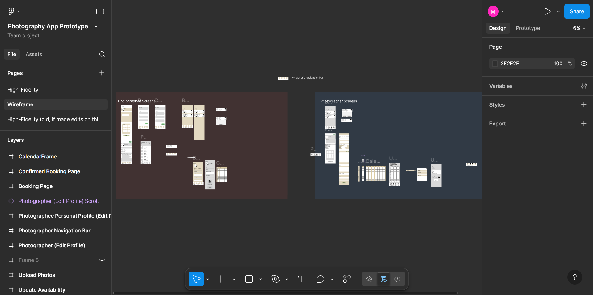
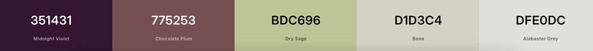

Case Study: Phinder
Problem
At Wellesley, the majority of students are extremely busy. This makes it difficult to coordinate something like a photoshoot, especially with a stranger, since the back-and-forth negotiation will quickly become tedious with an unfamiliar student. On the other hand, many students want professional-quality photographs, particularly for their senior photos or headshots. Then, from the perspective of the student photographer, we found from our interviews that requests are not centrally organized: photographers receive requests on a variety of platforms, which makes them difficult to keep track of.
Thus, our group created Phinder based on the needs of such students: our timeslot-booking model for photoshoot scheduling would reduce the hassle that students face when trying to book photography appointments, and the centralized platform for making and receiving requests would reduce the hassle that photographers currently face when having to keep track of their commitments.
Process
Following the milestones stipulated as course assignments, we began an iterative process to prototyping and evaluating this app.
Initial Prototypes
Based on our contextual inquiry of the target user population, we identified some high-level goals that we would like the app to have, then brainstormed various designs for the app and jotted them down in the form of paper prototypes. We reduced our ideas down to two main approaches: one design involved photographers choosing which students' photoshoot requests to take, while the other had students choosing which photographers to request for their photoshoot.
Photographers select photoshoot requests that they are interested in taking.
Students select photographers that they would like to be photographed by.
These paper prototypes were then presented to our CS 220 classmates, from whom we received ample feedback and were thus able to decide on a direction to proceed in: we ended up going with the photo subject-centered design, one reason being that the requesting side would typically have a more time-sensitive need, so it would be ideal to have the photographers be on-demand resources that they can select from whenever needed.
After deciding on a design, we began implementing our wireframe prototype. This preliminary prototype of the app showed the basics of our screens, focusing on a general overview of functionality and layout rather than implementing actual interactions or making aesthetically pleasing design choices.
Our wireframe prototype, modeled on Figma.
Testing and Iteration
We were then able to conduct usability tests with the wireframe prototype that we had created, since it included all basic functionality of the app. For this purpose, we designed a testing protocol that allowed us to see if users were able to complete key tasks in the app. Since we had two primary user bases (the photographers and photo subjects), we designed a set of tasks for each type of user; generally, photographers were to imagine they were looking for experience and accept a photoshoot request, while photo subjects were to imagine they were seniors hoping to have professional-quality senior photographs taken and schedule a photoshoot accordingly.

Testing the wireframe prototype on Figma.
After this first round of evaluation, we were able to incorporate the feedback that we received (that mostly involved small bugs in the interactions and changes to/additions of certain features) in our high-fidelity prototype.
The creation of the high-fidelity prototype started with deciding on a graphic design direction. We tried a couple of different color palettes, until deciding on a more muted one that did not divert focus away from the actual photographs that the app would contain. We used this color palette as a guideline, choosing colors to designate as the primary, secondary and accent colors respectively.
The website-generated color palette that we used as a guideline.
Then, we began to alter the wireframe prototype, being sure to incorporate feedback from the first round of usability testing and ensuring all interactions were in place. The end result is the high-fidelity prototype below.
Our Solution
Video demo for photo subject view.
Video demo for photographer view.
The two videos above are short demos of Phinder's functionality, with the first representing a student's process of selecting and scheduling a photographer for a photoshoot request, and the second representing that of receiving, accepting and completing a photoshoot request on the photographer's end.
Below are two slides from our final presentation of the project, where we showcase key changes made based on the feedback we received and data we collected from the wireframe uability testing. Since users seemed satisfied with the overall functionality, these were mostly small aesthetic changes and additional features.

The Figma canvas showing all interactions in our high-fidelity prototype.
My Contribution
We completed this project as a group of three, splitting our responsibilities relatively evenly. As such, each of us would conduct one or two interviews/usability testing sessions, each of us had our own set of screens that we were responsible for. Still, we coordinated well, constantly and consistently communicating our processes and ideas so that the final design (and other deliverables like our presentation and paper) could be standardized across all of our individual work.
Personally, I focused on reusable components: particularly, I worked on the list of available photographers, creating a component for each "user" (photographer or photo subject) display so that my teammates could use the same component in their own screens. Similarly, I also created a component for the calendar interface, since it would be similar across the availability editing and timeslot booking screens - my teammates were then able to use this component as needed. I also created the two versions (photographer vs. photo subject) of the navigation bar, ensuring that it successfully brought the user to their desired screen from most other screens.
I also handled some small "elements of delight" for increased satisfaction, such as a notification for confirmation of a user's action. This component (and its relevant interactions) were attached to numerous screens in the app, wherever relevant.
More generally, in addition to my own delegated set of responsibilities, I feel I was able to help my team with the Figma controls and tools. My teammates would at times encounter bugs that I was able to fix or give suggestions on, since I'd grasped the hang of Figma relatively quickly through slight prior experience and online tutorials. I believe this led to a smoother flow of the project overall, with reduced time dedicated to fixing errors in Figma interactions.
Conclusion and Future Work
In our final round of testing (using the high-fidelity prototype), we received greatly reduced feedback on missing features to be added and unresolved bugs. It seems that users were satisfied with the product, and a few users said that they would be willing to use Phinder in their everyday lives.
However, some points of improvement still remain. The feedback from the last usability tests showed some small errors and inconvenience when using the app, particularly in trying to find the button for uploading photos (from the photographer's perspective) and trying to view the uploaded photos (from the photo subject's perspective). Users would often first navigate to the Messages screen when trying to complete this task, instead of accessing the correct screen (Booked Jobs) directly. Hence, we added a new interaction to the Messages screen that navigates to the upload/view photos screen (for the respective viewpoints), though this addition remains to be tested.


Photographers are now able to access the photo-upload feature through the messages screen.
Photo subjects are now able to view the uploaded photos through the messages screen.
Other points of improvement include having the prototype be able to more accurately simulate a released product by replacing the placeholder names, adding real photographs and so on. Additionally, some limitations of Figma (or perhaps our understanding of it) led to less-than-ideal prototyping: for instance, users would have liked the ability to drag across the calendar interface to select multiple timeslots at once, but we were unable to implement such an interaction in time.
Altogether, though, Phinder seems to be a usable and appropriate solution for students in both of our target user populations. The availability-focused scheduling system provides an avenue for busy students to coordinate meeting times, and the app functions as a single centralized hub for searching for photographers, scheduling, commmunication and delivering the final photos; this reduces greatly the risk of overlooking requests due to receiving them via multiple platforms.